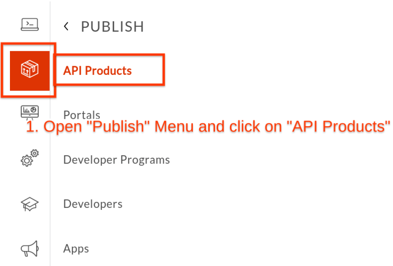
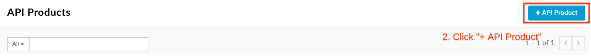
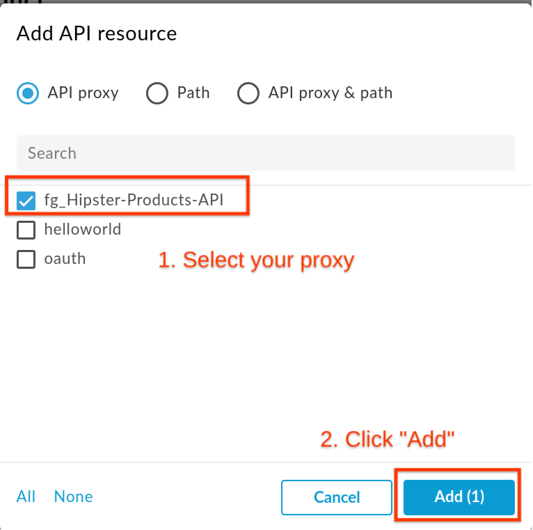
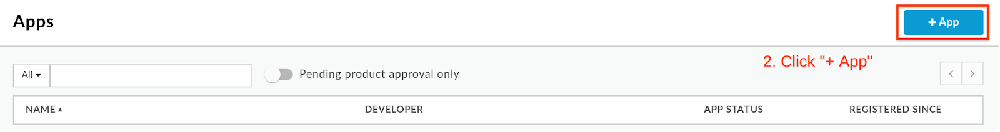
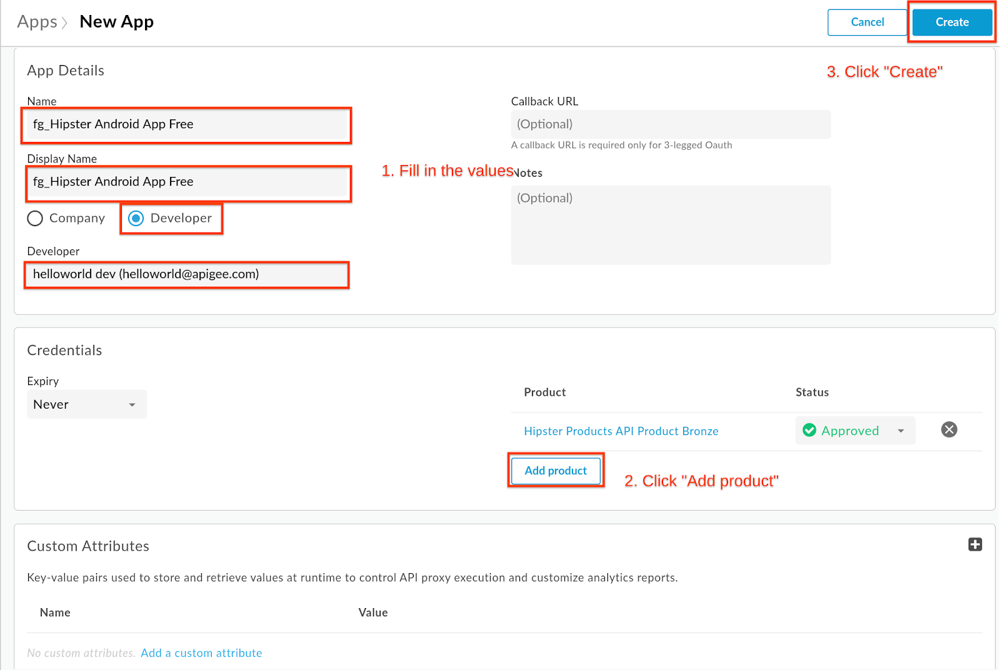
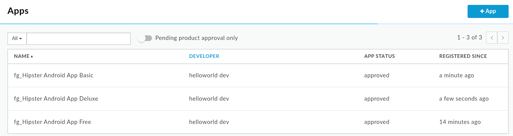
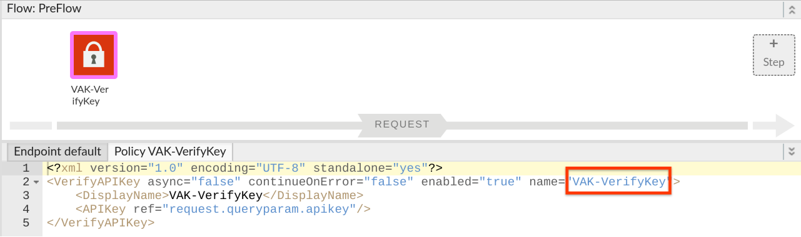
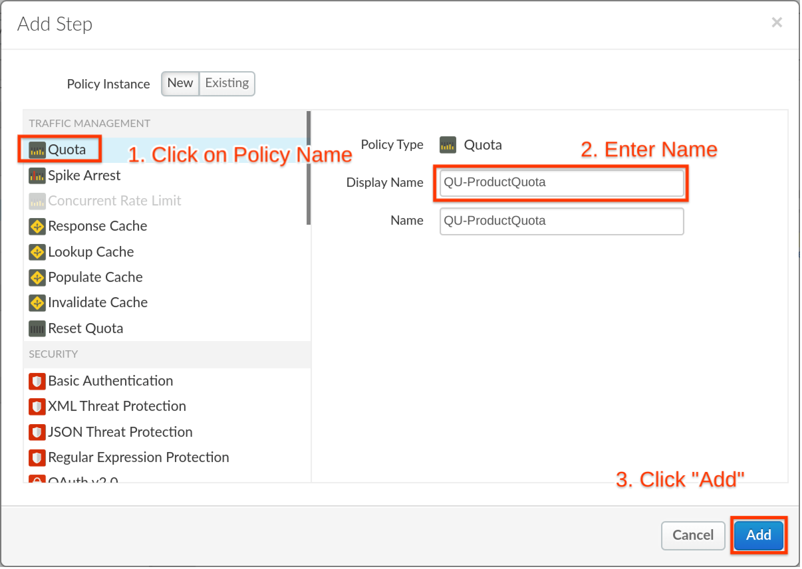
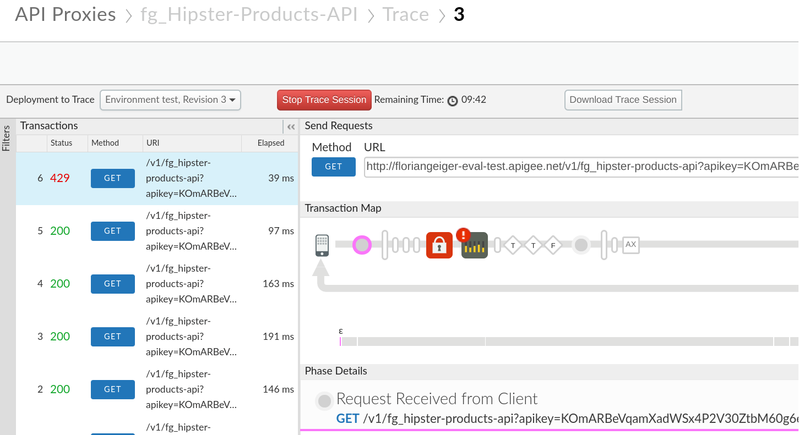
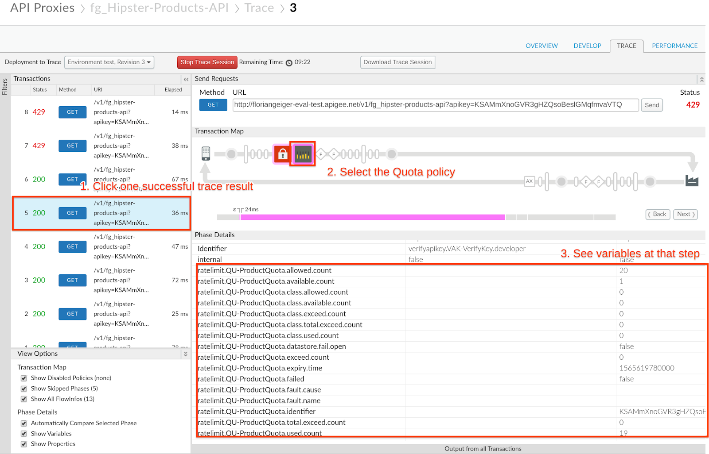

Last Updated: 2019-08-12
Duration : 15 mins
Persona : API Product Team & API Dev Team
The concept of tiered API products in an API strategy
Freemium
API tiering is a new look at API as a Product. With tiering you provide the base level (e.g. bronze) as a free option. This offer is an entry point to leverage your data offering in an upsell. The goal is to upsell to additional functional levels. This term is also known as "freemium".
Provide more functionality for a cost
The approach it follows a very basic approach – offer basic functions or call quotas as an entry level and if more data access or more functionality is required, offer this for a fee.
This gives developers the chance to have a working prototype and explore your API in a real life scenario before making an informed purchase decision.
How can Apigee help
Apigee offers the concept of API Products abstracted from the functional logic of API proxies. The proxies can access the limits defined in API Products. This way the API product team can focus on the business logic (e.g. setting quotas per product) while the API development team works with these values to implement the parametrized behaviour.
Pre-reqs are met if you have followed Lab 1 and 2.
The minimum for this lab is to have the following:
- Deployed API proxy with a "Verify API Key" policy
- Developer for who we can register an App with our API product.
In this lab we will create different API products that call the same API proxy but with different quotas attached to it.
- Go to Apigee Edge and log in. This is the Edge management UI:
- Select Publish → API Products
- Click +API Product


- Populate the following fields
- Section: Product details
- Name: {yourInitials}_Hipster-Products-API-Product
- Display name: Hipster Products API Product Bronze
- Description: Free version of the Hipster Product API
- Environment: test
- Access: Public
- Quota: 5 requests every 1 Minute
- Section: API resources
- Click the Add a proxy link

- Select {yourInitials}_Hipster-Products-API Proxy and click Add

API products have a set of fields called "Quota" that allow you to configure how many requests per number of time periods (e.g. 5 requests per 1 second) you want to allow. Just configuring this does NOT enforce quotas though! This is just a definition that the quota policy that we define in the next steps picks up dynamically.
- Click Save to create the API Product
We now create 2 similar products that represent our Silver and Gold Products with different Quota settings. To create another API Product just follow these steps:
- Click Publish → API Products
- Click +API Product
- For the Silver Product populate the following fields
- Section: Product details
- Name: {yourInitials}_Hipster-Products-API-Product-Silver
- Display name: Hipster Products API Product Silver
- Description: Free version of the Hipster Product API
- Environment: test
- Access: Public
- Quota: 5 requests every 1 Minute
- Section: API resources
- Click the Add a proxy link
- Select {yourInitials}_Hipster-Products-API Proxy and click Add
- For the Gold Product populate the following fields
- Section: Product details
- Name: {yourInitials}_Hipster-Products-API-Product-Gold
- Display name: Hipster Products API Product Gold
- Description: Deluxe version of the Hipster Product API
- Environment: test
- Access: Public
- Quota: 9000 requests every 1 Minute
- Section: API resources
- Click the Add a proxy link
- Select {yourInitials}_Hipster-Products-API Proxy and click Add
Now we should end up with 3 API Products resembling our Product tier strategy.

- Select Publish → Apps
- Click +API Product


- Populate the following fields
- Section: App Details
- Name: {yourInitials}_Hipster Android App Free
- Display name: Hipster Android App Free
- Developer: Chose any existing Developer
- Section: Credentials
- Click Add product

- Select Hipster Product API Product Bronze and click Add

- Click Create to create the App
- Note down the Key for later by clicking on "Show" in the App properties.

Repeat the process for the Apps that use the Silver and Gold tier as well, with using these values:
- App using the Silver API Product
- Section: App Details
- Name: {yourInitials}_Hipster Android App Basic
- Display name: Hipster Android App Basic
- Developer: Chose any existing Developer
- Section: Credentials
- Click Add product
- Select Hipster Product API Product Silver and click Add
- App using the Gold API Product
- Section: App Details
- Name: {yourInitials}_Hipster Android App Deluxe
- Display name: Hipster Android App Deluxe
- Developer: Chose any existing Developer
- Section: Credentials
- Click Add product
- Select Hipster Product API Product Gold and click Add
You should end up having 3 Apps with 3 different API keys, that you have noted down.

As stated before, quotas are only enforced by adding a quota policy into your proxies. With the configuration of the API Product Quota fields in the API product this will populate the necessary variables that are available in your proxy, which then can be fed into a quota policy.
- Click on Develop → API Proxies from side navigation menu. Open the existing API Proxy from the prerequisites.
- Verify that the policy for Verify API Key exists with the proper name. Click on the Policy Name and look at the XML configuration below.

- Click PreFlow and + Step to add a new policy

- Click Quota Policy and Populate the following fields
- Display Name: QU-ProductQuota
Click Add to add the policy to your flow.

- With the VerifyAPIKey policy that we have configured in our prerequisites VAK-VerifyKey, the following variables are populated after verification of an API key that has an API product with the quota fields set as 3 requests per 1 second:
verifyapikey.VAK-VerifyKey.apiproduct.developer.quota.limit = 3
verifyapikey.VAK-VerifyKey.apiproduct.developer.quota.interval = 1
verifyapikey.VAK-VerifyKey.apiproduct.developer.quota.timeunit = secondThe next step then is to set the QU-ProductQuota Quota policy to reference these variables and use this code in the Policy Configuration
<?xml version="1.0" encoding="UTF-8" standalone="yes"?>
<Quota async="false" continueOnError="false" enabled="true" name="QU-ProductQuota" type="calendar">
<DisplayName>QU-ProductQuota</DisplayName>
<Allow count="3" countRef="verifyapikey.VAK-VerifyKey.apiproduct.developer.quota.limit"/>
<Interval ref="verifyapikey.VAK-VerifyKey.apiproduct.developer.quota.interval">1</Interval>
<TimeUnit ref="verifyapikey.VAK-VerifyKey.apiproduct.developer.quota.timeunit">minute</TimeUnit>
<Identifier ref='verifyapikey.VAK-VerifyKey.client_id'/>
<Distributed>true</Distributed>
<Synchronous>true</Synchronous>
<StartTime>2019-01-01 12:00:00</StartTime>
</Quota>
- Click on Save after you have changed the policy in the previous step

Go to the API proxy and enter the trace tab so we can run some tests:
- Click Trace
- Click Start Trace Session
- Add the Bronze apikey value as a query parameter to the URL (e.g.: http://{yourapigeeorg}-test.apigee.net/v1/{yourInitials}_hipster-products-api?apikey=GYuZekimsQ2TLdWWMHkqB1poAquHaGsv
- Run a test by clicking the Send button multiple times

- After 6 calls we see that our free quota of 5 calls is exceeded and the quota policy shows a red exclamation mark sign

Now we switch API products and add the Silver apikey value from our App as a query parameter to the URL (e.g.: http://{yourapigeeorg}-test.apigee.net/v1/{yourInitials}_hipster-products-api?apikey=GYuZekimsQ2TLdWWMHkqB1poAquHaGsv
- Change your apikey parameter to match your Silver App credentials
- Run a test by clicking the Send button around 15 times before clicking Start Trace Session
- Start the trace session and click the Send button a couple of times again before reaching your limit.
Let's check out the trace result:
- Click on one of the successful trace results on the left (indicated by a green Status with 200)
- Click the quota policy icon in the Transaction Map

- Here we see at the end of our calls that we only have one count available (ratelimit.QU-ProductQuota.available.count) out of the original 20 (ratelimit.QU-ProductQuota.allowed.count).
- Also have a look at the other variables available as part of the proxy flow.
At this point, we will skip the Deluxe/Gold version of our product, but you get the idea, that your developers won't easily reach the limit with this one.
- What would happen if you leave out the Identifier Tag in the Quota Policy?
In this lab you have created 3 products aligned with your API product strategy to offer a tiered model and have different quotas attached to each product. We have not defined the limits in our API proxies but made the same proxy available as different API products that define the quota amount.
What we've covered
- Setup a freemium model
- Define quotas in API products
- Reference the quotas in API proxies
- Test our setup
Apigee Docs Links
https://docs.apigee.com/api-platform/reference/policies/quota-policy